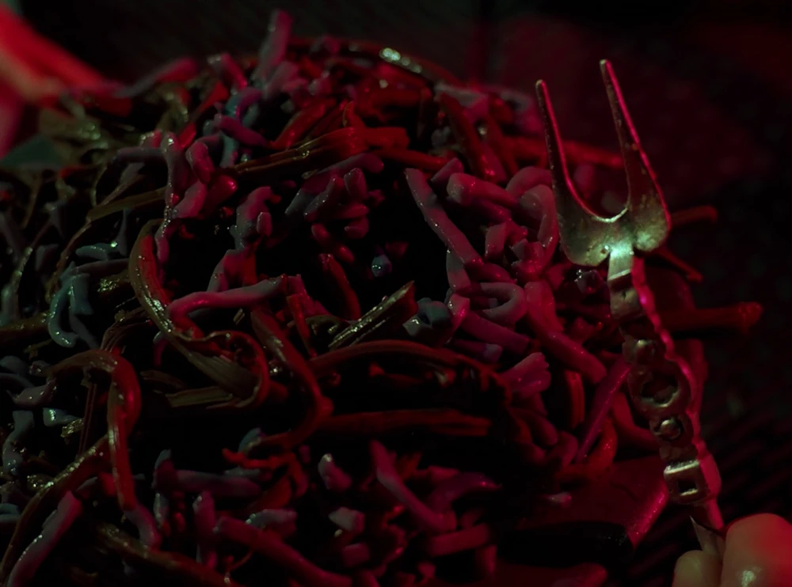

How to Prepare Gagh

Description
Welcome, brave culinary adventurers, to the world of Klingon cuisine!
Prepare your taste buds for a journey into the heart of the Klingon Empire with our featured dish, Gagh. A true delicacy among the warrior race, Gagh is a dish made from serpent worms, renowned for its unique texture and bold flavors.
Known for their love of the hunt, Klingons take great pride in preparing and devouring this ferocious dish. Get ready to channel your inner warrior and immerse yourself in the rich culinary traditions of the Klingon Empire as we guide you through the preparation of Gagh!
Ingredients
- 1 lb (450g) live serpent worms
- 1 cup bloodwine (or substitute with red wine)
- 2 Klingon fire peppers (optional for those seeking extra heat)
- 2 large bat'leth leaves (or substitute with fresh bay leaves)
- Rendered Klingon animal fat (or substitue with your prefered cooking oil)
- Salt, to taste
Steps
- Begin by acquiring live serpent worms from a reputable source, ensuring they are fresh and vibrant. Handle them with caution as they can be quite lively.
- Once you have the worms, gently wash them in cold water to remove any impurities. Be careful not to harm yourself with their sharp fangs.
- In a deep bowl, pour the bloodwine over the worms, allowing them to soak for at least 30 minutes. This helps to remove any remaining toxins and infuses them with a unique flavor.
- If you desire a fiery kick, finely chop the Klingon fire peppers and add them to the bloodwine. Let the worms marinate in this fiery elixir for an additional 10 minutes.
- After marination, remove the worms from the bowl, draining off excess liquid. Carefully pat them dry with a clean cloth or paper towel.
- Preheat a sturdy pan over high heat and add a generous amount of rendered Klingon animal fat, or any oil you might have as a substitute. Once hot, add the worms to the pan, ensuring they sizzle upon contact.
- Cook the worms for approximately 5-7 minutes, stirring occasionally, until they turn a rich golden brown color and become slightly crispy. The texture should be firm yet tender.
- Sprinkle the cooked worms with a pinch of salt, to taste. For an authentic touch, place the bat'leth leaves on top of the Gagh, allowing their aroma to infuse the dish.
- Remove the Gagh from the pan and serve it immediately, embracing the Klingon tradition of enjoying fresh, hearty meals. Dare to take a bite, and let the robust flavors and unique texture transport you to the warrior realms of the Klingon Empire.
Closing
Prepare yourself for a true Klingon feast, and savor the intense flavors and sensations that Gagh has to offer. Qapla'!